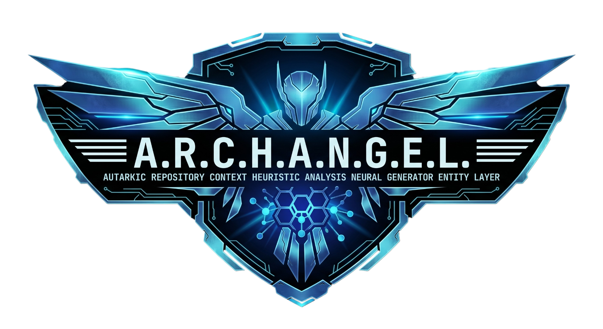
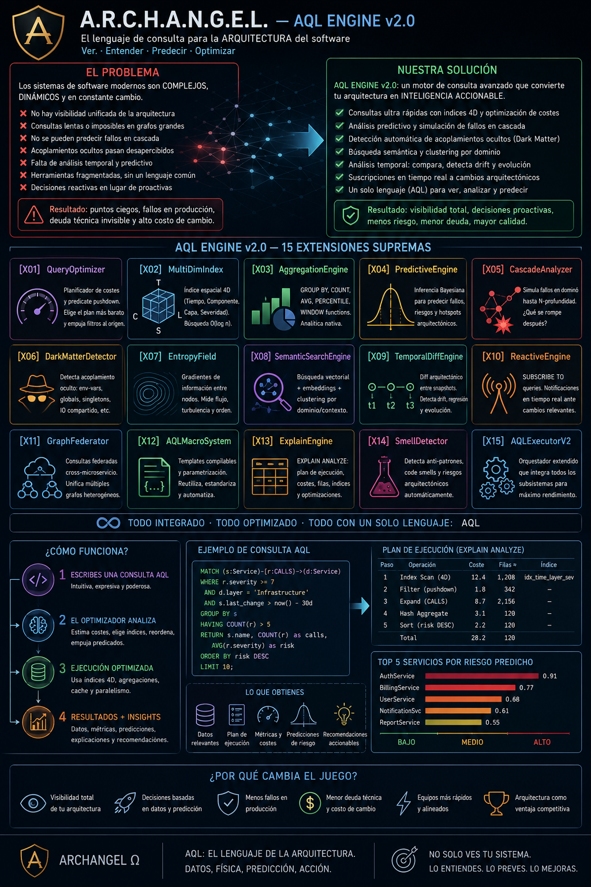
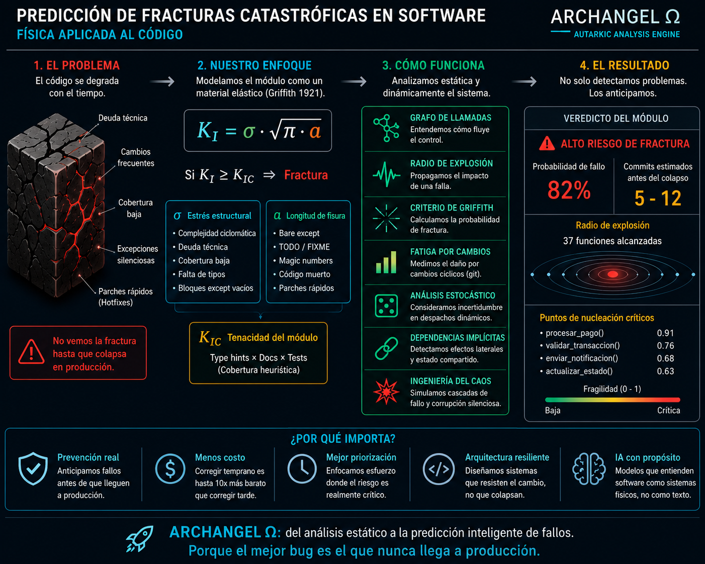
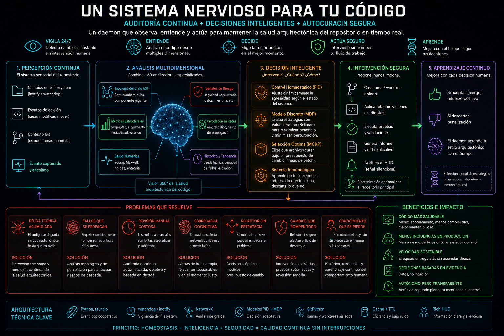

Proyecto insignia
Motor de análisis estático multi-lenguaje que trata el software como un sistema físico: entropía, fractura, propagación de riesgo y aprendizaje continuo aplicados al código.
En acción
El problema → la respuesta
La mayoría de las herramientas de análisis reportan síntomas sueltos: deuda técnica, acoplamiento, dependencias circulares. ARCHANGEL los conecta en un solo ciclo — detectar, interpretar, decidir, proponer, validar, aprender.
El repositorio se modela como un grafo: nodos, dependencias, hotspots y riesgo de propagación. Un motor de análisis multidimensional combina topología, métricas estructurales, señales de riesgo, tendencias históricas y salud numérica.
Sobre esa lectura, un módulo de control y decisión (homeostático + modelo de decisión) elige qué corregir, respetando un presupuesto de cambio y evitando repetir estrategias que ya fallaron antes.

Predicción de fracturas
v8.0 del predictor: no es una fórmula suelta, es un modelo calibrado contra el historial real de Git — con la misma honestidad de ingeniería que el resto del motor.

Calibración contra Git real, no pesos inventados. GriffithCalibrator ajusta la escala y los pesos del criterio con regresión logística y un modelo de supervivencia Cox Proportional Hazards sobre el historial real de commits — con Kaplan-Meier como validación cruzada y bootstrap para saber cuánta incertidumbre hay en esa calibración.
Radio de explosión con solver exacto. La "mancha de mutación" que se propaga por el call graph ya no se acumula con un BFS de primer-toque (sesgado) — un solver de punto fijo calcula la probabilidad de contaminación exacta, validado en paralelo contra una simulación Monte Carlo y una cadena de Markov absorbente.
Puntos de fractura con topología real. Más allá del mapa heurístico de fragilidad, localiza puntos de articulación reales del grafo (algoritmo de Tarjan) y conectividad algebraica (valor de Fiedler) — no una intuición sobre qué función es crítica, sino la estructura del grafo diciéndolo.
La extensión que conecta este módulo con el resto del sistema (IRKnowledgeGraph, IRDelta) consume primitivas que, al momento de esta versión, todavía no existían en el checkout activo. En vez de fingir la integración, cada primitiva se define como un contrato (Protocol) con un fallback local — mismo patrón defensivo que el resto del motor. Cuando el módulo real aterriza, esta pieza lo usa sin cambios.
AQL Engine v2.0
15 extensiones sobre un motor de consultas propio para arquitectura de software — un SQL para grafos de código, con física embebida como funciones nativas del lenguaje. Ninguna es un módulo decorativo: cada una resuelve un problema concreto con un modelo matemático explícito detrás.
Inferencia bayesiana real, no una heurística con nombre bonito: combina 6 evidencias independientes (masa sobre el límite Chandrasekhar, estado térmico, bus factor, decay, exposición de seguridad, entropía) con log-odds — cada evidencia suma o resta a favor de "va a fallar" de forma matemáticamente aditiva, no un promedio ponderado ingenuo — sobre un prior base de 4% de fallo a 30 días.
Simula el efecto dominó con BFS por olas, amortiguando la intensidad en cada una (factor 0.65). Lo interesante: identifica firewall nodes — módulos con estabilidad suficiente para absorber el fallo y frenar la cascada ahí, en vez de propagarla — y calcula un riesgo de extinción total del sistema.
5 tipos de acoplamiento invisible que ningún grafo de imports ve: variables de entorno compartidas, estado global/singleton compartido, mismos archivos o endpoints de I/O, co-cambio temporal sin import, y similitud semántica por coseno de embeddings >0.85 entre módulos sin ninguna arista explícita entre ellos.
Sobre estas extensiones corre AQL, el lenguaje que las conecta: consultas con índices 4D (label, masa, estado térmico, dominio/capa — cada uno O(1) o O(log n) según el tipo) y un optimizador que hace predicate pushdown, reordena joins por selectividad y estima coste antes de ejecutar — igual que un EXPLAIN ANALYZE, pero sobre el grafo arquitectónico completo en vez de una tabla.

La física no es una metáfora en el marketing — es una función que se llama dentro de una query real:
Las 15 extensiones completas
| Ext. | Motor | Qué resuelve |
|---|---|---|
| X01 | QueryOptimizer | Predicate pushdown, selección de índice, reordenamiento de joins por selectividad |
| X02 | MultiDimIndex | Índice 4D (label, masa, térmico, dominio) — búsqueda O(1)/O(log n) en vez de scan completo |
| X03 | AggregationEngine | GROUP BY, PERCENTILE, STDDEV, WINDOW functions sobre resultados AQL |
| X04 | PredictiveEngine | Predicción bayesiana de fallo a 30/90 días con log-odds |
| X05 | CascadeAnalyzer | Simulación de fallo en dominó por olas, con nodos firewall |
| X06 | DarkMatterDetector | Acoplamiento oculto: env-vars, estado global, I/O, semántico |
| X07 | EntropyFieldCalculator | Gradientes de información entre nodos — detecta "sumideros de entropía" (God Objects) |
| X08 | TemporalDiffEngine | Diff arquitectónico entre snapshots: drift score, violaciones nuevas/resueltas |
| X09 | ReactiveEngine | SUBSCRIBE TO queries que se re-ejecutan y disparan solo cuando el resultado cambia |
| X10 | GraphFederator | Una misma query AQL contra N microservicios, con UNION/INTERSECT/DIFF |
| X11 | AQLMacroSystem | Biblioteca de queries parametrizables reutilizables (como black_holes arriba) |
| X12 | ExplainEngine | EXPLAIN ANALYZE real: coste estimado vs. real, precisión de la estimación |
| X13 | SmellDetector | 8 anti-patrones detectados automáticamente con prescripción — ver abajo |
| X14 | HealthScoreEngine | Score compuesto A+ a F de toda la arquitectura — ver abajo |
| X15 | AQLExecutorV2 | Orquestador que integra los 14 subsistemas anteriores en una sola API |
Health Score & Anti-Patrones
170.000 líneas de análisis no sirven de nada si nadie las lee. El Health Score Engine las comprime en un solo número con letra — como un reporte de crédito, pero para tu código — y el Smell Detector le pone nombre a cada síntoma.
5 dimensiones, ponderadas por impacto real. Estructural 30% (masa, complejidad, ciclos), Temporal 25% (velocidad de cambio, bus factor, estado térmico), Seguridad 20% (hotspots, decay, exposición), Conocimiento 15% (bus factor, documentación inferida), Topológica 10% (capas, cohesión, acoplamiento).
Penalización directa por smells críticos — cada anti-patrón de severidad CRITICAL le resta puntos al score final, así que "está limpio en promedio" no puede esconder un God Object real.
Detecta tendencia, no solo estado. Comparado contra el score anterior: MEJORANDO ↑, ESTABLE, o EMPEORANDO ↓ — la pregunta que de verdad le importa a un equipo no es "¿qué tan mal estamos hoy?" sino "¿vamos para mejor o para peor?".
8 anti-patrones, con nombre y prescripción — no solo "este archivo es complejo"
Masa > 1.5× el límite Chandrasekhar + más de 5 dependientes. Prescripción: Single Responsibility + Extract Class + Facade Pattern.
Ciclos reales en el grafo de imports (DFS con pila de recursión). Prescripción: Dependency Inversion, romper con interfaces.
Módulos de >50 líneas sin ningún dependiente y que no son puntos de entrada. Candidatos a código muerto.
Un solo cambio conceptual obliga a tocar archivos dispersos por todo el repo.
Sin capas claras — todo importa de todo, sin dirección predominante.
Caída abrupta de bus factor justo en la zona de mayor riesgo del sistema.
Congelado (sin cambios) pero con deuda técnica alta — legado muerto que nadie se atreve a tocar.
Un módulo usa más los datos/métodos de otro que los suyos propios — señal de que está en el lugar equivocado.
Cada smell trae la query AQL exacta que lo detectó — no es una opinión, es un resultado reproducible.
Taint & Secret-Leak Analysis
A diferencia de un linter que hace grep de patrones sospechosos, este motor sigue el dato: de dónde viene, por qué alias y mutaciones pasa, y si de verdad llega a un punto peligroso — con la misma honestidad con la que fue construido.
10 categorías de taint, no un booleano. Cada valor puede pertenecer a SQLI, CMDI, CODEI, PATH, XSS, SSRF, DESER, SSTI, LDAP o SECRET al mismo tiempo — un sanitizador solo retira la categoría que de verdad neutraliza: html.escape() quita XSS, no SQLI.
Resúmenes de función memoizados. Cada función se analiza una sola vez para derivar qué categorías llegan a su return y qué parámetros muta por referencia — no recorre el cuerpo completo en cada punto donde se llama.
Alias y mutación de contenedores. b = a hace que ambos apunten a la misma ubicación; una mutación in-place como a.append(x) contamina esa ubicación y se refleja en todos sus alias.
Nunca poda una rama que no puede probar imposible. Con Z3 disponible resuelve caminos por SMT real; sin Z3 cae a un chequeo de intervalos. Cuando no hay certeza, el resultado es "posiblemente alcanzable" — prefiere el falso positivo ocasional antes que esconder una vulnerabilidad real.
No es un grafo de propiedades de código (CPG) materializado ni un aliasing tipo Andersen/Steensgaard completo — sería sobre-ingeniería para este dominio. Es análisis de flujo de datos iterativo con join en cada punto de fusión, matemáticamente equivalente a un CPG para un lattice de taint monótono. Cada simplificación está documentada junto a qué caso concreto no cubre.
Un sistema nervioso para tu código
No es una metáfora suelta: cada mecanismo del daemon está fundamentado en un modelo publicado, con cita y año — no una analogía decorativa.
u(t) = Kp·e(t) + Ki·∫e(t)dt + Kd·de(t)/dt — el sistema mantiene estable la "temperatura" de deuda técnica con un bucle de retroalimentación negativa real, no un cronómetro de inactividad fijo (Åström & Hägglund, 1995).
El grafo de llamadas AST se analiza con números de Betti y el criterio de Molloy-Reed: detecta cuándo el grado medio del grafo cruza el umbral crítico donde emerge una componente gigante conectada — riesgo real de percolación, no un conteo ingenuo de imports (Molloy & Reed, 1995).
V(x) = max_u [ r(x,u) + γ·V(x') ] — en modo frío, resuelve qué refactorización aplicar como un MDP finito por value iteration, penalizando la perturbación real medida como tamaño del patch generado (Bellman, 1957).
Qué archivos curar bajo un límite de perturbación se resuelve como Multiple-Choice Knapsack: un grupo por archivo, una estrategia candidata por ítem, presupuesto en líneas de patch tolerables por ciclo (Kellerer, Pferschy & Pisinger, 2004).
Las ramas Git generadas son "anticuerpos": si el desarrollador las mergea, refuerzo; si las borra sin mergear, castigo. El daemon aprende el estilo arquitectónico real con el tiempo, no repite lo mismo siempre (de Castro & Von Zuben, 2002).
Incluso las alertas al HUD siguen un principio con nombre: usan un canal de baja entropía —señal silenciosa, no interrupción— para no contaminar el flujo cognitivo del desarrollador (Shannon, 1948).
Arquitectura técnica
Backend en FastAPI con orquestación DAG de ~64 sub-analizadores, caché reactiva y circuit breakers. Frontend en React/Vite. Extensión de VSCode y GitHub Action para integrarse al flujo de CI. El daemon corre sobre Python/asyncio con watchdog para vigilancia del filesystem, NetworkX para análisis de grafos y GitPython para gestionar ramas y worktrees aislados.
Comparativa honesta
| ARCHANGEL | SonarQube / Semgrep | |
|---|---|---|
| Output principal | Campo tensorial de riesgo (D1–D5) | Score de calidad / lista de reglas |
| Taint analysis | 10 categorías simultáneas, sanitización contextual | Regla binaria por patrón |
| Predicción | Probabilidad de fractura calibrada contra Git real | No predice, solo detecta lo ya presente |
| Intervención | Rama aislada + aprendizaje de tus decisiones | Reporta; no propone ni aprende |
| Diseñado para | Ser contexto de alta densidad para un LLM | Ser leído por un humano en un dashboard |